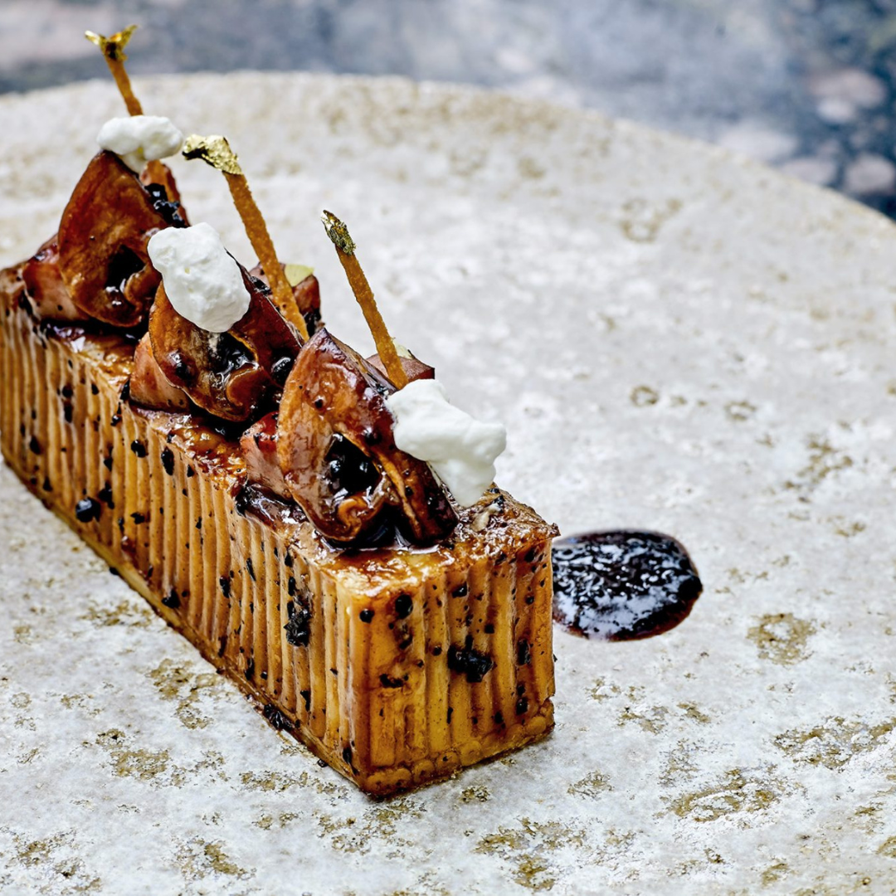

Perfectly al dente spaghetti should be tossed in butter and parmesan and carefully laid out side by side to form the walls of a rectangle. Glaze the ham, truffles, and cep mushrooms together with jus and place them in the timbale. Drizzle with truffled cream. Paint the exterior with more jus and top with a thin parmesan crust and delicately adorn with gold leaf.